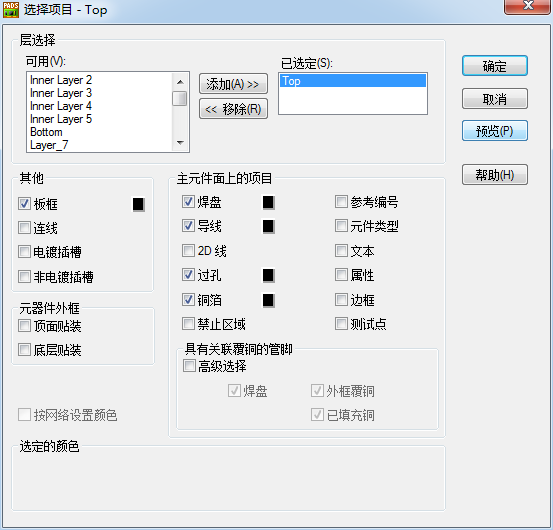

20160307
> File / CAM
Gerber
给PCB板厂的 Gerber 文件
a. 走线层，（包括信号层、电源层和地层）
如2层板便是顶层和底层线路共两层线路
4层板则是顶层、第2层、第3层、及底层线路共4层线路
b. 阻焊层，在不需要焊接区域涂上一层阻焊及防氧化材料，一般为绿油，这类主要是Soldermask Layer Top/Bottom
c. 丝印层 用于标示零件范围、方向及序号。一般包括（Top/Bottom Silkscreen Layer）
d. NC数据及钻孔图，而需要多少的NC数据，则视PCB板有多少款的盲埋孔，即是有多少款Drill Pair(钻孔对)
4层板钻孔文件和孔位图共2 个
* 当需要堵住过孔时(即平时说的过孔盖油)，可以该Gerber文件设置中去掉via，预览时见不到过孔，即满足要求。
d. 钻孔层：（drilldraw）
e. 铜网层：主要用于组装工厂在放置SMD零件于电路板前，需透过此冶具在SMD
零件的PAD上涂一层锡膏，这个一般由(Paste mask Layer Top/Bottom)来
实现
f. 装配图：(Assembly)
***另外，有些贴装厂可能会要求提供坐标文件，这种文件实现上其实就是通过
file/export实现，在export配置窗的section中，只选择part,即不导出网络，通常还
会要求你导成低版本兼容格式，一般在format单选框中选PowerPCB V4.0基本就
够了
删除选中的碎铜
Edit / Find / 查找条件(Find By) : Isolated Pour and Action / Select / Delete
走线层(Top)
文档名称(Document Name) : Top or Bottom
")
文档类型(Document Type) : 布线/分割平面(Routing/Split Plane)
层关联性 : Top or Bottom
输出设备(Output Device) : 光绘(Photo)
自定义文档(Customize Document) : 层(Layers)

")
已选定 : Top or Bottom
主元件面上的项目 :
焊盘Pads、导线Traces、过孔Via、铜箔Copper
其他 :
板框(Board Outline)
具有关联覆铜的管脚(Pins with Associated Copper) :
高级选择(Advanced Selection) Top和Bottom层时要将此项选中
自定义文档(Customize Document) : 选项(Options)
X偏移 : 10000
Y偏移 : 10000
调整偏移量至符合CAM工作区内位置
注意 偏移量最好是所有Gerber及NC Drill都是相同
设置设备(Device Setup)
在转换时，如果不希望把圆弧打碎的话，则 设备设置 / 高级 / Circular Interpolation : Full /
孔径(Apertures)表文件是art01.rep，它列出了设计中所用的所有孔径(Apertures)
Board 检视范围为板框(Board Outline)
Extents 检视范围为CAM的工作范围
Workspace 检视范围为工作区
阻焊层Solder Mask Top 顶层绿油层
文档名称(Document Name) : Solder Mask Top
文档类型(Document Type) : 阻焊层
层关联性 : Top
输出设备(Output Device) : 光绘(Photo)
自定义文档(Customize Document) : 层(Layers)
已选定 : Top
主元件面上的项目 :
焊盘Pads、铜箔Copper、测试点Test Point
已选定 : Solder Mask Top
焊盘Pads、铜箔Copper、测试点Test Point
其他 :
板框(Board Outline)
助焊层(Paste Mask Top) 焊盘锡膏层
文档名称(Document Name) : Paste Mask Top
文档类型(Document Type) : 助焊层
层关联性 : Top
输出设备(Output Device) : 光绘(Photo)
自定义文档(Customize Document) : 层(Layers)
已选定 : Top
主元件面上的项目 :
焊盘Pads、铜箔Copper、测试点Test Point
已选定 : Paste Mask Top
Lines、铜箔Copper、测试点Test Point
其他 :
板框(Board Outline)
即没有勾选的就会有绿油覆盖，需要露铜(不需要绿油)的地方就勾选
丝印(Silkscreen Top) 顶层白油层
文档名称(Document Name) : Silkscreen Top
文档类型(Document Type) : 丝印(Silkscreen Top)
层关联性 : Top
输出设备(Output Device) : 光绘(Photo)
自定义文档(Customize Document) : 层(Layers)
已选定 : Top
主元件面上的项目 :
参考编号(Ref.Des)、边框(Outline)
已选定 : Silkscreen Top
2D Line、文本(Text)、边框(Outline)
其他 :
板框(Board Outline)
元器件外框
勾选 顶层贴装(Top Mounted)
勾选 底层贴装(Bottom Mounted)
钻孔图(Drill Drawing)
文档名称(Document Name) : Drill Drawing
文档类型(Document Type) : 钻孔图(Drill Drawing)
层关联性 : Top
已选定 : Top
主元件面上的项目 :
焊盘Pads、Lines、过孔Via、Text
其他 :
板框(Board Outline)
已选定 : Drill Drawing
Lines、Text
其他 :
板框(Board Outline)
一个文件没有顶面和底面钻孔层之分
因此一个Gerber文件只设一个钻孔光片文件
板位图跟表格重叠在一起时做如下操作 :
自定义文档(Customize Document) : 选项(Options) / 绘图选项 / 钻孔符号(Drill Symbols) / 钻孔图选项(Drill Drawing Options) /
在Drill Chart 选项下面的Location 下输入合适的X 和Y 值，便可以将钻孔表的位置移动到合适的位置。例如输入X：0，Y：2.5
数控钻孔(NC Drill)
转NC Drill 前一定要清楚此板是否为盲/埋孔，通过 Setup / Drill Pairs 查看
文档名称(Document Name) : NC Drill
文档类型(Document Type) : 数控钻孔(NC Drill)
自定义文档(Customize Document) : 选项(Options) / NC钻孔选项 /
转非盲/埋孔 NC Drill :
")
")
选择 : 通孔(Through Via)、金属化孔(Plated Pi)、非金属化孔(Non-Plated Pi)
转盲/埋孔 NC Drill :
选择 : 半导通孔(Partial Via)
取消 : 通孔(Through Via)、金属化孔(Plated Pi)、非金属化孔(Non-Plated Pi)
钻孔对Drill : 选择盲/埋孔类型
注意 应对应不同类型的半导通孔(Partial Via)在输出时分别命名。如忘记更改，最终将只有最后一种转换有效，即drl001.drl
使用PADS Layout 的一个自动生成CAM无模命令 : @camdocs (需要手动配置钻孔文件)
贴片所需资料 :
电子BOM、整拼板钢网资料、和贴片坐标(需包含MARK坐标)
贴片坐标导出方法 :
>Tools / Basic Scripts / Basic Scripts... / 17-Excel Part List Report / Run /
or
> File / CAM Plus /


面(Side) : Top or Bottom
元件(Parts) : SMT
勾选 读取值属性(Read Value Attributes)
输出格式(Output Format) : Dynapert Promann